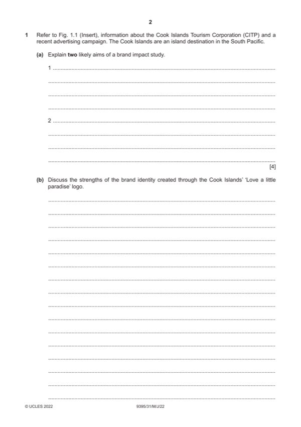

Question 1

Original paper page 2
Part 1(a) — solution
- Identifying the market / main customer segment (1) finding out who the
- Customers’ needs and wants (1) establishing what appeals to different
- Competition (1) understanding who the direct and indirect rivals are (1)
- Travel trends (1) researching to see what might affect the current
- Customer behaviour and preferences (1) building on basic needs and
- Popularity of destination (1) to see level of performance in the market (1)
- Understanding how advertising campaigns affect visitor perceptions (1)
- Butler model (1) analysing what needs to happen to move to the next
Mark points
- Identifying the market / main customer segment (1) finding out who the
- Customers’ needs and wants (1) establishing what appeals to different
- Competition (1) understanding who the direct and indirect rivals are (1)
- Travel trends (1) researching to see what might affect the current
- Customer behaviour and preferences (1) building on basic needs and
- Popularity of destination (1) to see level of performance in the market (1)
- Understanding how advertising campaigns affect visitor perceptions (1)
- Butler model (1) analysing what needs to happen to move to the next
Part 1(b) — solution
Discuss the strengths of the brand identity created through the Cook 9
Islands’ ‘Love a little paradise’ logo.
Candidates are expected to be familiar with characteristics of an effective
brand identity. They should be able to combine their theoretical knowledge of
these concepts with information from Fig.1.1, to present an applied response
specific to the context of the Cook Islands.
Indicative content:
Brand name – clear, concise
Slogan/tagline – Love a little paradise – association with paradise consistent
with island destination messages;
Cultural association – national flower
Text in the logo is clear, some decorative elements,
USP – colour here, use of the word paradise
Use of colour – shocking pink is eye-catching
Price in association with image – not referenced
Distinctive packaging – not referenced
Corporate identity (uniforms, furnishings, etc.) – not referenced
Other relevant information should also be credited.
Mark according to the levels of response criteria below.
Level 3 (7–9 marks) Candidates provide a discussion of the strengths of the
characteristics of brand identity of Cook Island’s brand identity. There is sound
and frequent evidence of thorough, detailed and accurate knowledge and
understanding of concepts and principles, using appropriate terminology as
well as specific reference to the Cook Islands.
Level 2 (4–6 marks) Candidates provide an explanation of the strengths of the
brand identity of the Cook Islands. Candidates will show an understanding of
the question and include identification and explanation of one, two or more
characteristics. The answer is relevant and shows reasonable knowledge and
understanding of specific marketing concepts and principles, with some use of
appropriate terminology and some reference to the Cook Islands.
Level 1 (1–3 marks) Candidates identify/describe up to three strengths of
establishing the brand identity but may not refer to the Cook Islands. The
answer shows limited knowledge and understanding of specific marketing
concepts and principles with limited use of appropriate terminology.
Level 0 (0 marks) No content worthy of credit.
2022 Page 6 of 9
9395/31 Cambridge International AS & A Level – Mark Scheme May/June 2022
Mark points
- Include the ideas shown in the solution above.
Part 1(c) — solution
Evaluate the success of the CITP’s month-long advertising campaign 12
using key performance indicators.
Candidates should use their knowledge and understanding of KPIs –
(specifically brand awareness) and apply this to the context of the Cook
Islands. Candidates may say there is limited evidence of a range of KPIs
based on a month-long campaign and that the longer term marketing strategy
is needed to bring more success.
Indicative content:
Brand awareness measured with ‘before’ and ‘after’ evidence
Two social media platforms were used as well as a range of websites for
higher visibility
Range of media employed including video, search and display
advertisements
Click through rate metrics
2.5 m reach
Mark points
- Include the ideas shown in the solution above.